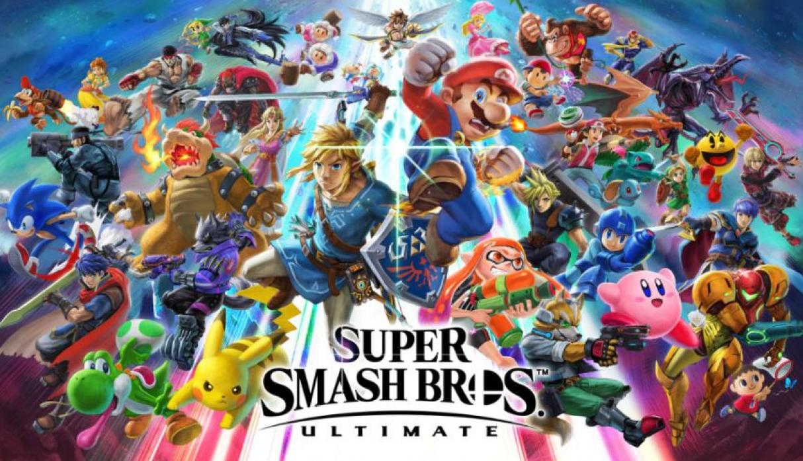
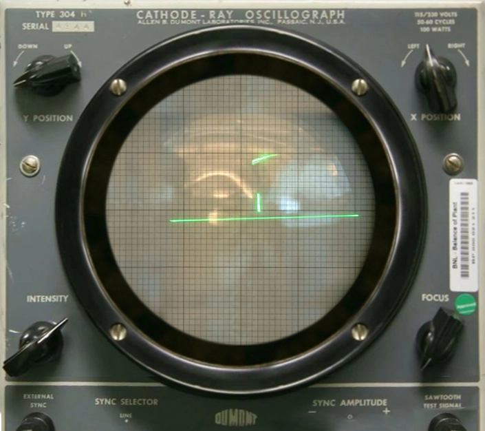
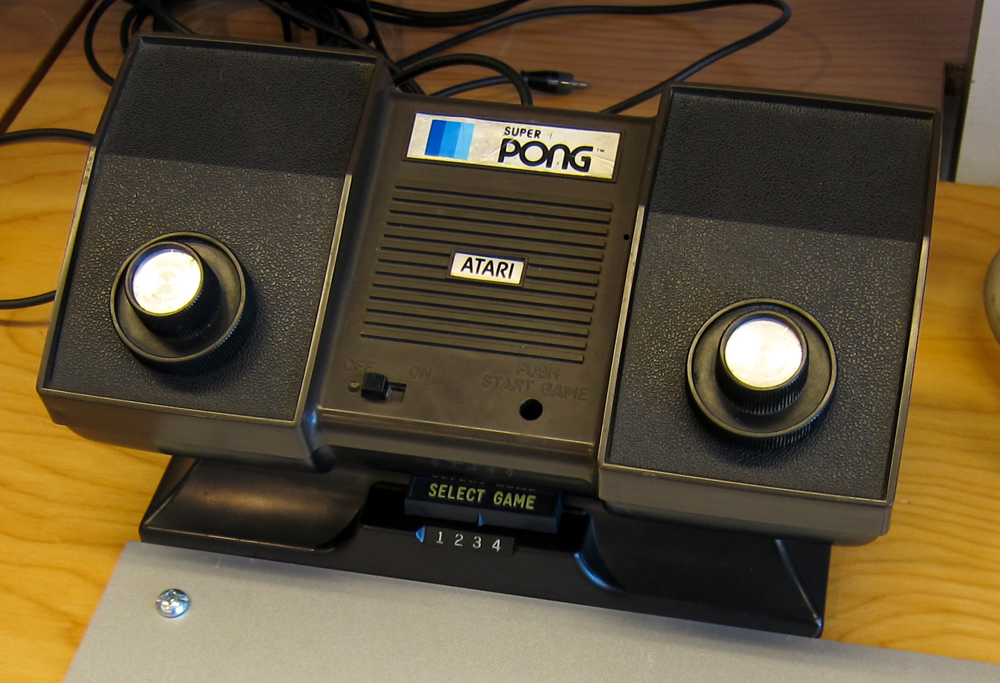
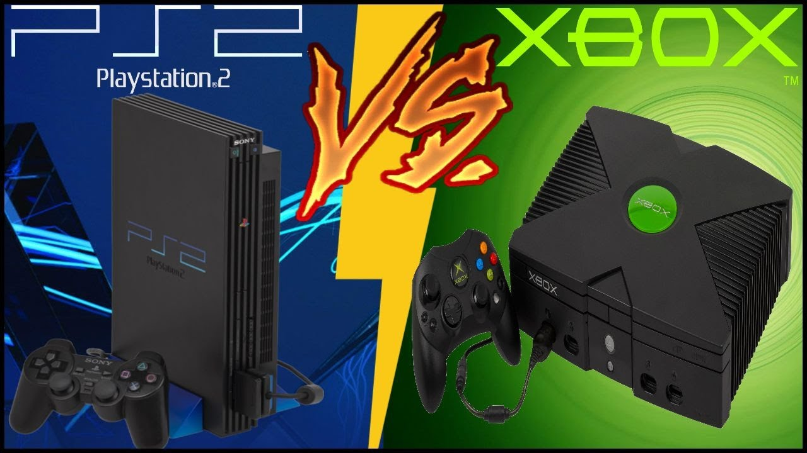
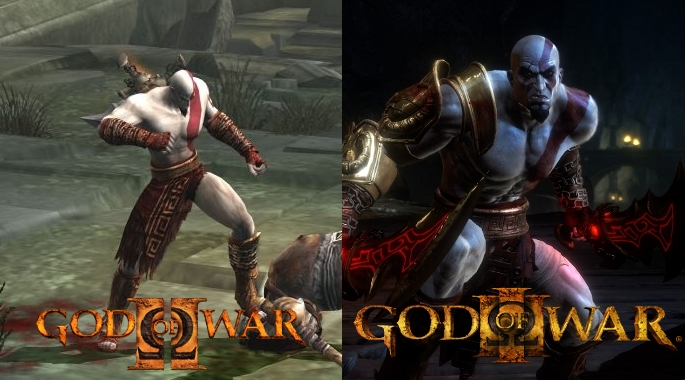
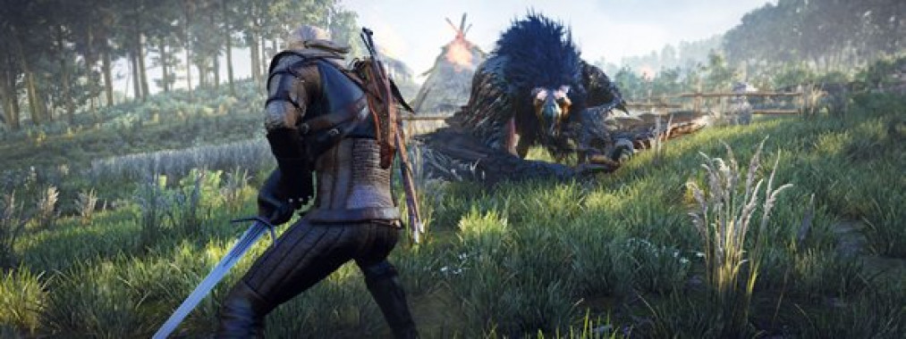
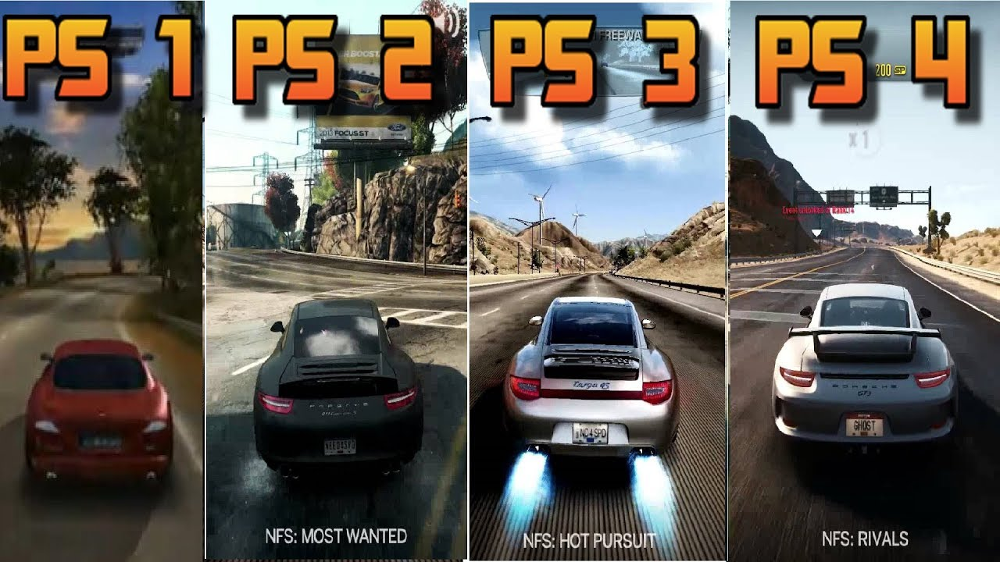

LA HISTORIA DE LOS VIDEOJUEGOS

Por Ivan Eduardo Pachon Velandia
Introducción
Los videojuegos se hacen cada vés mas comunes, en la actualidad existe un número gigantesco de ellos y no es por nada raro,
los videojuegos tiene el propósito de divertir y entretener a las personas, y la gran mayoría de ellos cumplen ese propósito de maravilla,
a día de hoy la generación más joven tiene a su disposición una cantidad de juegos inconmensurable, pero huvo una época en la que no fue así,
los videojuegos no son un invento reciente, el primero de ellos fue inventado hace 62 años, pero no fué hasta la llegada del siglo XXI que los
videojuegos dieron un gran salto, el primer videojuego fue creado en 1958 por el físico William Higinbotham, bautizado "Tennis For Two",
fue desarrollado a partir de una computadora analógica conectada a un osciloscopio, que hacía las veces de monitor.

Primeras Consolas y Juegos
En los años posteriores más videojuegos del estilo empezaron a surgir, eran juegos muy básicos, pero es normal dadas las limitaciones tecnológias de la época,
los juegos casi siempre eran para computadoras, pero no fue hasta el año 1972 que salió a la venta un famoso juego arcade llamado Pong que empezó la era de las
consolas de videojuegos, la primera de ellas, la Atari.

Después de la salida de la Atari, empezaron a salir al mercado varias consolas, muchas de las cuales fueron un fracasocomercial debido a limitaciones técnicas,
como también a un catálogo demasiado pobre en cuanto a videojuegos, pero una de las compañías que lanzaron al mercado su consola logró mantenerse en el mercado,
una compañía que muchos conocen a día de hoy, la famosa Nintendo, la cual ha lanzado al mercado gran cantidad de consolar a lo largo de los años, y es una de las
3 principales potencias en cuando a consolas de videojuegos a día de hoy. Los videojuegos fueron desarrollándose a buen ritmo a finales del siglo XX, cada vez eran
más detalados y las consolas eran mejores por lo que cada vez habia mejoras tanto visuales como jugables, todos los juegos fueron 2D , algunos daban la sensasión de
ser en 3D pero no era más que una sensación falsa, no fue sino hasta En 1993 con el lanzamiento de Virtual Fighter en Japón para las recreativas que apareció un verdadero
juego en 3D, a partir de este momento, los juegos en 3D se hicieron una realidad, y empezaron a desarrollarse y salir a la venta de forma cada vez más frecuente.
Evolución del Mercado
En 1994 Sony lanza al mercado su famosísima Play Station, la cual contó con un gran catálogo de juegos en 3D, algunos de ellos bastante famosos, como Crash Bandicoot o
Metal Gear, esta consola vendió mas de 100 millones de unidades, y no fue nada raro, fue una buena consola con un catálogo bien surtido, esto hizo a Sony muy feliz por
lo que siguieron desarrollando nueva tecnología hasta crear la Play Station 2 en el año 2000, la consola más vendida de la historia con un total de 160,18 millones de unidades vendidas.
En la misma generación que la PS2 salio una consola que se volvería más adelante su competidor más directo, siendo ésta la Xbox, hecha por Microsoft y lanzada al mercado en el año 2001, y aunque
tan solo vendio 24 millones de unidades, tenia una de las franquicias más famosas a dia de hoy, la tan conocida saga de Halo, Nintendo por otro lado, lanzó a la venta
la famosa Nintendo DS, con m'as de 150 millones de unidades vendidas, esta tendría su propio catálogo muy diferente de las otras dos consolas de Sony y Microsoft,
en la Xbox habia varios juegos que tambien estaban disponibles en la PS2, aunque no tenia sagas exclusivas y famosas como God Of War o Ratchet And Clank.

Un Cambio Notable
En los juegos de la decada del 2000 se alcanzó un gran despliegue gráfico, los juegos tenian gran detalle en los escenarios jugables y los personajes tambien poseían un
buen nivel de detalle, en la salida de la PS3, la Xbox 360 y la Wii/Wii U, lanzadas por Sony, Microsoft y Nintendo respectivamente, se meraron mucho los gráficos en comparación
a la generación anterior, un buen ejemplo de esto seria la diferencia gráfica entre God Of War 2 de PS2 y God Of War 3 de PS3, el nivel de detallado es infinitamente superior
en la PS3, al tener menos limitaciónes, los desarrolladores pudieron mostrar sus verdaderas habilidades para diseñar videojuegos. Los juegos cada vez ocupan más espacio,
en un inicio ocupaban menos de un Megabyte, pero conforme pasaron los años y fueron mejorando gráficamente, han llegado a un tamaño colosal, el God Of War 2 de PS2 ocupa
alrededor de 10 Gigabytes, el God Of War 3 de PS3 ocupa alrededor de 35 Gigabytes.

La Generación Actual
En el año 2013, Sony y Microsoft lanzaron al mercado su nueva generación de consolas, la PS4 y la Xbox One, la brecha gráfica entre esta generación y la anterior al principio no
fue muy notoria, pero conforme pasaron los años, los desarrolladores se acostumbraron cada vez más al hardware de estas consolas, con lo que pudieron crear juegos con un gran despliegue gráfico
tal como sucedió con el Juego de PS4 Uncharted 4 lanzado en el año 2016 o, por poner un ejemplo más reciente, el juego Red Dead Redemption 2, lanzado al mercado en el año 2018, un juego de Rockstar Games, la cual es bastante conocida por su saga
de videojuegos Grand Thefs Auto, de la cual, el Grand Theft Auto V, es el segundo juego más vendido de la historia con un total de 130 millones de copias vendidas, superado solo por Minecraft
con un total de 200 millones de copias vendidas,es obvio que el mercado de los videojuegos y las consolas es cada vez mas lucrativo, por lo que las compañías tienen una gran motivación
para crear grandes consolas y juegos inolvidables.
Nintendo llegó tarde a la fiesta, lanzando su consola de nueva generación en 2017, la cual en cuanto a hardware era la peor de las tres, pero contaba con una gran cantidad de juegos exclusivos y
títulos muy populares y queridos por su comunidad, tal como Zelda Breath Of The Wild, que también salio para la generación anterior de Nintendo, y un juego nuevo de una de las sagas más icónicas
del mundo de los videojuegos, el Mario Oddisey.

La Gran Calidad Grafica Actualmente
Es aquí cuando nos damos cuenta que los videojuegos han llegado a un punto muy alto gráficamente, ya no tenemos los juegos hechos de puro pixel en 8 o 16 bits, sino que tenemos juegos con un despliegue gráfico
sublime, y aunque han habido decenas de consolas a lo largo de la historia, hay una que no se categoriza como tal pero que siempre ha estado presente, en efecto, hablo de la computadora,
aquella que ha estado desde el inicio y ha llegado hasta el final, es obvio que una computadora de hace 50 años no podría reproducir videojuegos de última generación, ésta también ha tenido varias evoluciones
a lo largo de la historia y es indiscutiblemente la que mejor hardware tiene entre todos, tiene multitud de ventajas con respecto a las consolas, como la fluidez de los juegos y los mods que crean para estos las comunidades.
Aunque los juegos han evolucionado mucho desde su inicio, estamos en un punto en el que cada vez son menos notorias las mejorías a nivel gráfico en los videojuegos, la
próxima generación de consolas que ya se ha anunciado, entre las cuales se encuentran la Play Station 5 y la Xbox Series X no tendrá una mejoría exxtraordinaria a nivel gráfico, hay muchos títulos que son considerados el tope,
tal como The Witcher 3: Wild Hunt, que a pesar de que salió en 2015, sigue teniendo una calidad gráfica muy superior a titulos salidos recientemente.
>
Así pues podemos concluir que cada véz se crean mejores consolas, y tal vez un día se logre al fin la tan deseada Realidad Virrual.

Consolas Más Vendidas de la Historia
| Consola |
Empresa |
N° de Copias Vendidas |
| Play Station 2 |
Sony |
160,18 Millones |
| Nintendo DS |
Nintendo |
154,02 Millones |
| Game Boy/Game Boy Color |
Nintendo |
118,69 Millones |
| Play Station 4 |
Sony |
112,3 Millones |
| Play Station (01) |
Sony |
104,25 Millones |
| Wii |
Nintendo |
101,63 Millones |
| Play Station 3 |
Sony |
87,4 Millones |
| Xbox 360 |
Microsoft |
86,5 Millones |
Como se puede ver en la anterior tabla, las 3 empresas principales que lideran el mercado de las consolas son
Sony ,
Nintendo y
Microsoft, pero se puede ver que microsoft es la que menos ventas tiene, lap rincipal razon podria ser la falta de
juegos exclusivos de la consola ya que generalmente los juegos que salen para la consola Xbox, también salen para PC (Computadoras), por otro lado Sony y Nintendo tienen
varios juegos exclusivos de sus consolas.